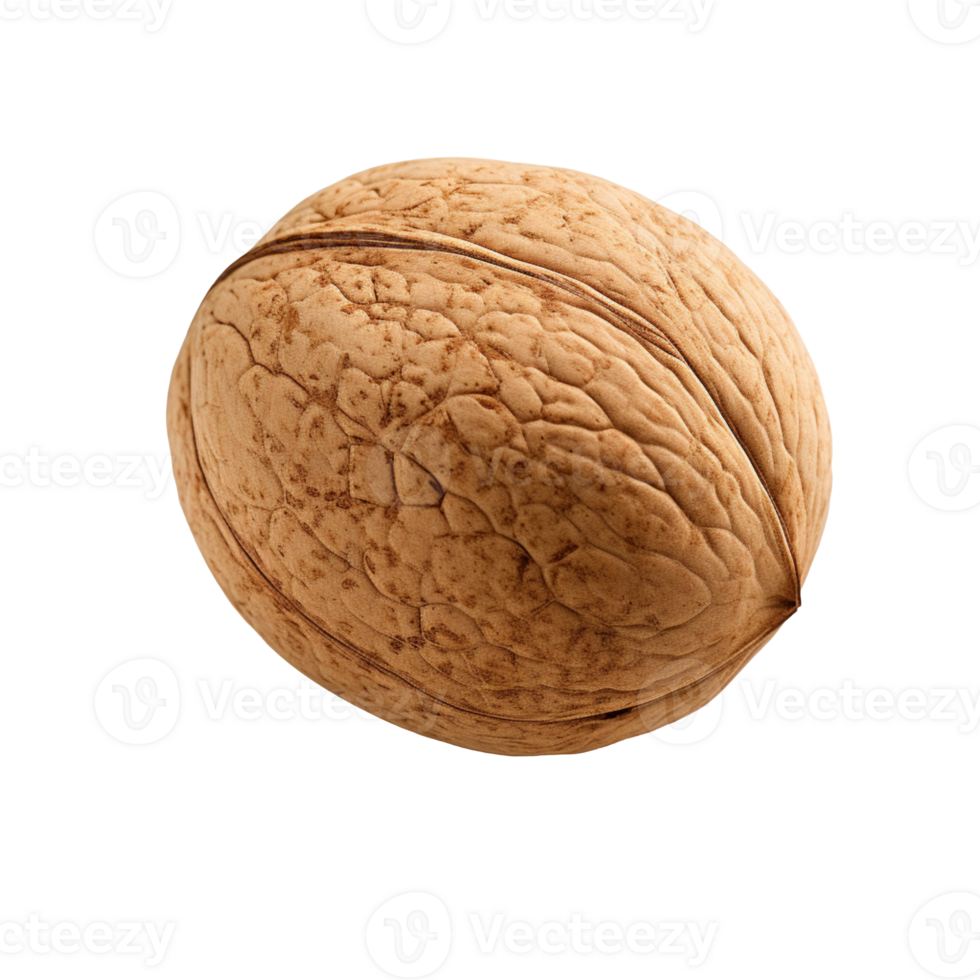
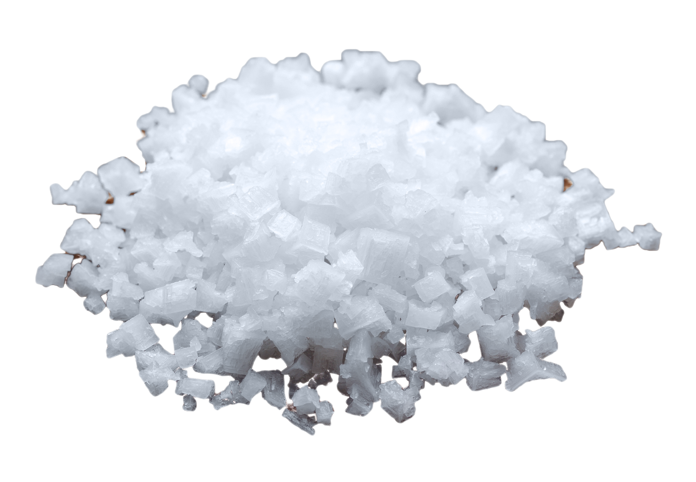

Pumpkin Pie Gnocchi
Delicate, pillowy gnocchi made with smooth pumpkin purée, lightly seasoned with nutmeg and Parmesan for a subtle, savory depth of flavor. These tender dumplings are gently boiled until they float and then tossed in a rich, aromatic butter sauce infused with crispy sage, creating a perfectly balanced dish that's both comforting and elegant.
1 cup pumpkin purée (canned or homemade, well-drained)

1 egg yolk

1 cup all-purpose flour (plus more for dusting)

1 potato

1/2 teaspoon nutmeg

1/4 teaspoon salt

- Spread the pumpkin purée on a paper towel to remove excess moisture if needed.
- In a bowl, mix the pumpkin purée, egg yolk, salt, and nutmeg until combined.
- Gradually add flour and Parmesan cheese, mixing until a soft dough forms.
- Lightly flour a surface and divide the dough into four pieces.
- Roll each piece into a long rope, about ½ inch thick, then cut into bite-sized pieces.
- Press each piece lightly with a fork to create ridges (optional).
- Bring a large pot of salted water to a boil.
- Drop in the gnocchi and cook until they float (about 2-3 minutes), then remove with a slotted spoon.
- In a pan, melt butter and sauté sage leaves for a few seconds.
- Add the cooked gnocchi to the pan and toss gently until coated.
- Serve hot with extra Parmesan and black pepper if desired.